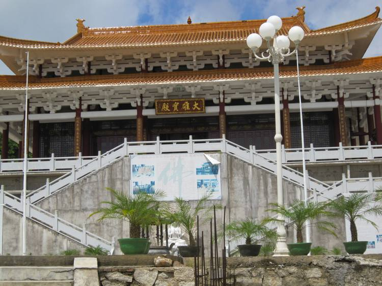
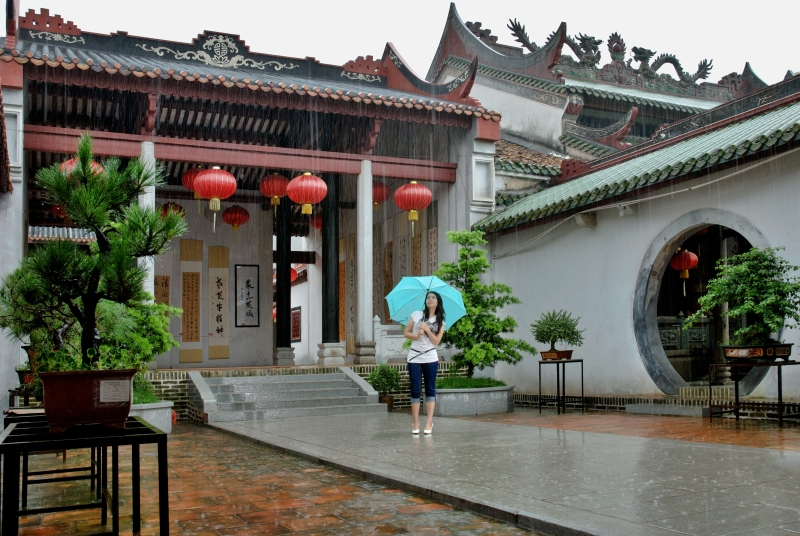
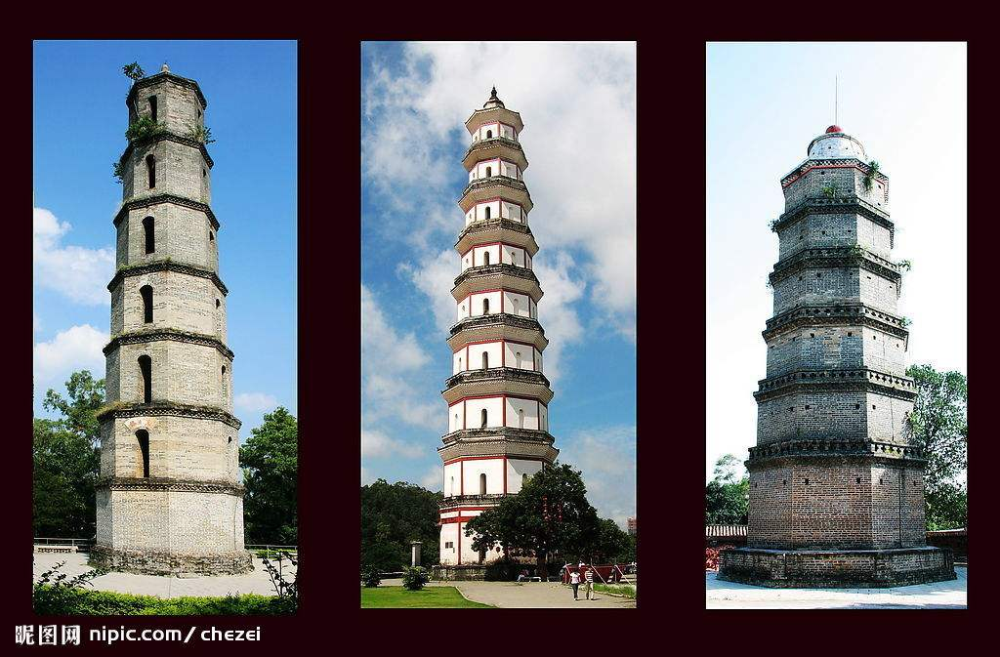
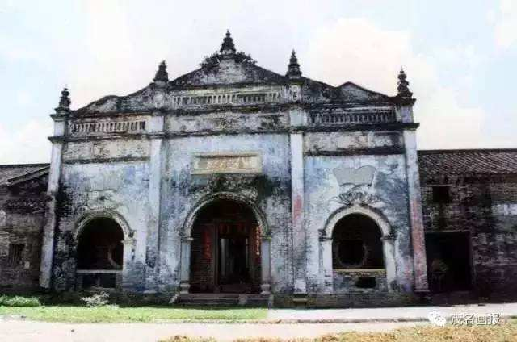

高州观音阁
观音阁位于广东高州市集贤街高力士宅后花园内中殿，始建于唐代，阁为木质结构，高约8尺，宽1丈多。阁额、圆柱绘刻彩色图案，镶嵌着金薄，玲珑剔透，熠熠生辉，庄严肃穆。阁内置有铜铸千手观音一尊，观音两侧有铜铸侍从两尊，皆由高力士在京聘请名匠用黄铜铸造送回寺阁供奉。明万历四十五年（1617年），灵惠寺与观音阁重修时，寺阁修饰一新，邑举人杨奇珍根据过去观音阁的奇趣故事，撰写了《观音阁碑》，镶嵌于灵惠寺内。灵惠寺与观音阁始建唐代，为高州四大名寺（灵惠寺、发祥寺、观山寺、观澜寺）之一，也是粤西地区古代名寺之一。历来香火鼎盛。后观音阁内有一铜铸侍从像被盗，盗者还在寺之墙壁上用木炭题上一首打油诗：“佛是西方佛，铜是东土铜。请佛暂回西方去，且救弟子一时穷。”演绎了一出奇趣佚闻。尔后，人们以一尊木雕侍从像代替铜铸侍从像。据清光绪《茂名县志》载：“阁中有一观音像，二侍者像俱铜铸，相传为高力士置。后失去右旁侍者像，再后以木像补之。”灵惠寺与观音阁于1977年，因高州人民医院扩建门诊大楼及职工宿舍才被拆除。
茂名灵惠寺

灵惠寺为唐代古刹，始建于公元714年，毁于明清，是粤西地区历史悠久的寺庙，建成后是粤西地区最大的丛林之一。六祖寺方丈上大下愿大和尚应相关部门及广大信众祈请，于2004年承接重建灵惠寺。现重建的灵惠寺位于茂名市森林公园后侧，占地面积200多亩。山门、流通处、钟楼、鼓楼、大雄宝殿、方丈楼、僧寮、客堂、上客堂、斋堂、厨房、功德堂、居士楼，拔地而起，已建成建筑面积达12000平方米。经过几年的风风雨雨艰苦创业，现已宝殿庄严，佛身成就。使来寺各方善信瞻礼问讯后心生恭敬，低头合掌，皆种善根，心念口称，俱沾福慧。
应广大善信虔诚恳请，经政府领导批准，特择于2010年1月1日（农历二零零九年十一月十七日）举行殿宇落成开光庆典暨普利水陆空冥阳两利功德法会。
冼太庙

位于高州城区人民路。据记载，该庙始建于明嘉靖十四年（公元1535年），在明、清两代曾先后重修。整座庙宇建筑面积达800余平方米，砖木结构，红墙绿瓦，斗拱飞檐，运用彩绘、堆塑、雕刻等艺术形式进行装饰，显得精致而华丽，具有浓郁的民族风格和地方风貌。主体建筑分前殿、中殿、正殿三进。正殿为穿斗式梁架结构，雕梁画栋，金碧辉煌。庙的顶脊有灰塑双龙戏珠等饰物。庙内《冼夫人记》碑、《恭谒冼夫人庙书》碑等碑刻保存完好。
庙中有清同治年间的玉香炉，晚清驻美国、古巴、秘鲁三国大使陈兰彬和工部左侍郎杨颐等人为该庙撰写的楹联等，以及多幅明清珍贵石碑记等。它们与一批当代书画家墨宝，多幅精致木刻、石刻，一起形成了富有特色和文化
该庙始建于明嘉靖十四年（即1535年）。全庙分前殿、中殿、正殿和冯公庙四部分。殿内冼太夫人雕像、石刻、碑刻等有较高的历史文化价值，为省级重点文物保护单位。
潘仙祠
潘仙祠位于高州市区文明路冼太庙东侧，为纪念西晋时代岭南道教先驱者潘茂名而建。潘仙祠是潘茂名综合型的纪念建筑，原为潘仙亭，始建于明代天启元年（公元1621）。崇祯十年（公元1637），扩其亭为潘仙祠。
潘仙祠原为单进建筑。祠前面建有广福庙。广福庙前有潘茂名的石船丹灶遗迹。潘仙祠原与石船丹灶相隔，灵气不通，而且祠路要从冼太庙左边进入，又为冼庙所压。后来，为了开通气脉，便将广福庙迁走，原广福庙址归入潘仙祠，专祀潘仙，以翕聚一邑之灵秀。修建后的潘仙祠，共分三进，总进深47米，面阔9.5米。正殿为双层楼阁式建筑，中殿和前殿为抬梁式木构架结构，右侧廊庑与冼太庙相通。
高州三塔
高州三塔均位于高梁古郡高州市市区内，据《高州史》记载："环城有三塔，北曰艮塔，东曰文光,西南曰宝光"。艮塔、文光乃清时建造,文光塔又称文笔塔，相传高州读书人多出秀才是因为有文光塔（笔）、学砚塘（砚、墨）以及笔架山（笔架）这“文房三宝”。宝光塔建于明朝万历。塔高65.805米，为全国第二高塔。塔身双层，浮图九级。熠熠闪光，别具特色。有极高的科学价值，艺术价值和观赏价值。公元1993年由高州政府再次重修，塔貌焕然一新。
镇隆古城
镇隆古城位于信宜市镇隆镇八坊村，迄今已有一千二百多年历史。古城中的古建筑多建于元明清代，民国时所建成的古民居多分布在与镇隆古城一河之隔的镇隆古街上。这些古建筑物的风格颇为别致，有中国传统的，也有中西合壁的，显得十分古典而大气。
据史料记载，镇隆古城有国内颇为罕见的由十三所书院形成的古书院群，以及七个公祠，两家公馆、文明门“红楼”、学宫“大洪国王府旧址”、冼太庙“大洪国招贤馆”、中山公园等一批具有历史意义和文物价值的古建筑。至今保存较为完整的书院尚有四所，红楼“文明门”、大洪国王府“学宫”、大洪国招贤馆“冼太庙”被列为省级文物保护单位。城内百年树龄以上的古树木也偶有所见